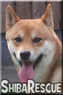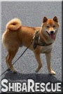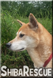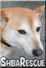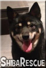
 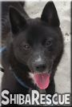
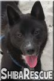
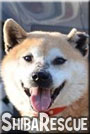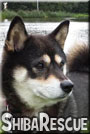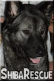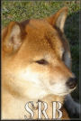
Wij zijn erg blij een steentje bijgedragen te hebben bij de herplaatsing van deze honden.
Foto's die we ontvangen van herplaatsers in hun nieuwe thuis,
komen op onze Facebook pagina te staan: Klik hier voor het album
Enkele recente foto's van honden welke op onze website hebben gestaan tijdens hun zoektocht.
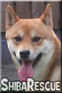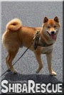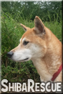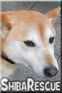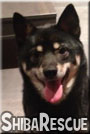
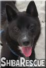
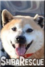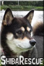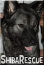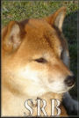
|
In Turnhout (B) woont Shiba Chico met zijn baasje Kristel. |